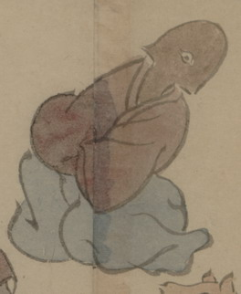

しゃもじの化物。頭部と首がしゃもじで、目玉が1つついている。体は人間のようで、赤っぽい衣と青い袴を着ている。座って、首を傾けている。
出典：親書誌：U426_nichibunken_0150：付喪神絵詞；ツクモガミエコトバ／日付：2010／資源識別子：U426_nichibunken_0150_0106_0000
Copyright (c)2010- International Research Center for Japanese Studies, Kyoto, Japan. All rights reserved.